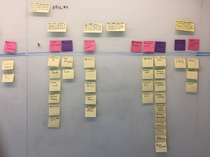
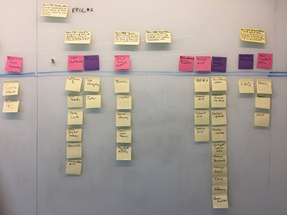

Homepage
return to portfolio
This project was for a partnership between Little League of America, Russell Athletic, and Prep Sportswear. We needed to built a new platform that was part fundraising and administrative management tool, and part e-commerce solution. The project was end-to-end, with some data dependancies on the previous system.
UI Development / Architecture & UX Process Consulting / Brand Design Management / Liaison between Design and Development teams
WHAT DOES A PRODUCT NEED TO EXIST FUNCTIONALLY? What pieces of data were needed to create the the finished product for the user? What input was needed from the user to reach the finished product?
HOW DO YOU BUILD THE SOLUTION IN A WAY THAT'S INFINITELY SCALABLE? What dependencies are needed, and how can we manage those without starting to tangle the wires?
WHAT IS THE MVP, AND HOW CAN WE DESIGN THAT AS WE BUILD? What features are absolutely needed for the whole platform to work and satisfy basic user needs? With time as a major factor, how can we build efficiently to keep up with design changes?
 

For our sake, a product must be made up of 3 main user-driven parts. The product SKU, the store, and the design. Those peices are further broken up by internally created, and externally provided data, which needed to live somewhere but wasn't needed for the user. What we needed to decide was what the user-facing data pieces were, how they interacted with each other, and with the user. The data included color, product details like size and gender, store name, design type, etc.
A few months before we started the project the creative director and I decided to run a small study on how people perceive color in terms of a sports-based retail platform like ours, and how it can affect their satisfaction with our product. This was to explore why customers who complained about a mismatch between their store colors and their shipped products were not satisfied with our output.
We gave a handful of internal users - people who should be familiar with these colors - 2 different collections of data. The first, a number of swatches of different shades of red's, green's and blue's. The second, a number of color names pertaining to those shades of red. We asked users to simply match the names to the swatches. The control for this was that the colors were actually based on the names given to the swatches by some of our D1 school (again, trying to make it easier for the user to make the correct choice).
When we compared results, what we found was we would have had more matches in sea of snowflakes. There was almost no correlation between user-control and user-user decisions. Therefore, it followed that 100% accuracy was unreasonable, so we should account for the variance rather than try to abolish error.
The design and the development for this project were running in parallel due to time constraints. So, I was forced to build the front end inbetween the design going through it's phases (wireframes to PS mockups), and the back end team building out the data, cart, controls, etc. I also had to build a living style guide into the sites.
I challenged myself to build the site as I did the style guide. Therefore, when the design was changed, all I had to do was update the style guide. Obviously it wasn't completely as clean as it sounds, but it was extremely effective. By defining the lowest level design elements, I was able to build atomically up, reducing the amount of places a certain element lived.
Atomic design is methodology for creating design systems. There are five distinct levels in atomic design: Atoms > Molecules > Organisms > Templates > Pages
colors, typography, icons
buttons, call-to-actions, form cells, links, hero images
forms, navigation, filters, design controls, footers
The essential flow of information was as follows. Little League would send all league admins or team managers an access code at the start of a season (one-use token for single-source data). He or she would set up the store in the fundraising/management site by filling in the information required by us. Name, stores colors, location, league, etc., and an ACH form for fundraising payments. This generated a link to their newly created e-commerce site for them to share with all team members, mailing-list members, whatever. Teams/leagues also being searchable from the homepage. A percentage of the sales from the e-commerce site would go back into that stores fundraising account, to be used as the administrator saw fit.
The point being, since they had to now buy their gear exclusively from us (holding the sole license to branded Little League apparel), it created a closed system for goods. If they wanted custom fan gear for their kids team, they had to get it from us, but they'd get money back for the team as well.
Successes
We released the two websites in MVP form, with a clean and simple interface that was intuitive and solved many of the problems the old system had. Data structures were still in their infancy, but were built with base structures that would support added data points as the system grew and began including a more full data set.
Building it atomically also made the code super easy to manage, and gave the design team more freedom to add features and change things.
Lessons Learned
This project was perhaps more difficult than it needed to be. It highlighted the need for a standard workflow and process through the stages. Because the architecture was being build in parallel to the design, there were a lot of incongruencies between the front and back ends.
I personally learned a lot of how to work with and manage large repositories of code, and how to effectively break down pieces of a system to more easily manage the parts that make up the whole.